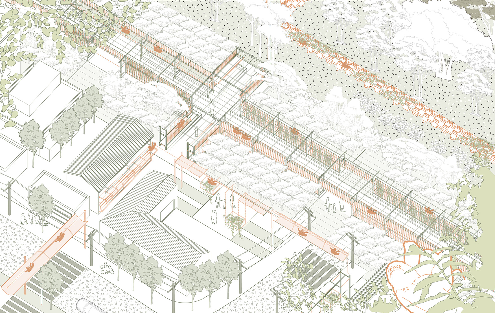

Yaohan Xu
Projects
Welcome to my Projects page! Here, you'll find a curated selection of works that reflect my skills, creativity, and passion for problem-solving. Each project is a testament to my dedication to exploring new ideas, overcoming challenges, and delivering impactful solutions. From web development and data visualization to machine learning and UI/UX design, these projects span a variety of fields, showcasing not only technical expertise but also a commitment to continuous learning and innovation.
View -
-
01 Dynamic Lifeline Landscape 2022-06 I create different forms of corridors to guard sloths safely traversing three major types of habitats in Costa Rica, and the development model transitions from more human-intervened to more natural-adjusted.
-
02 Mufu New Life Landscape 2021-07 I provide guidelines for planting needed by the ecological restoration of the mine and replace traditional planting design with a way that residents can participate.
-
 03 Break the Wall Landscape 2021-10 I set up a new prison layout and mode of beneficial coexistence with the community and Neighborhood Association will ensure a way for different groups to express ideas.
03 Break the Wall Landscape 2021-10 I set up a new prison layout and mode of beneficial coexistence with the community and Neighborhood Association will ensure a way for different groups to express ideas. -
04 Reshape the Farmland Landscape 2021-02 I shape several different waterfront terrains that allow users to spontaneously choose various activities, and also leave room for possible future flooding.